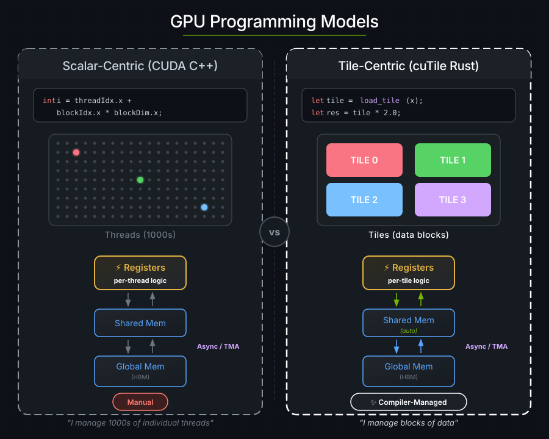
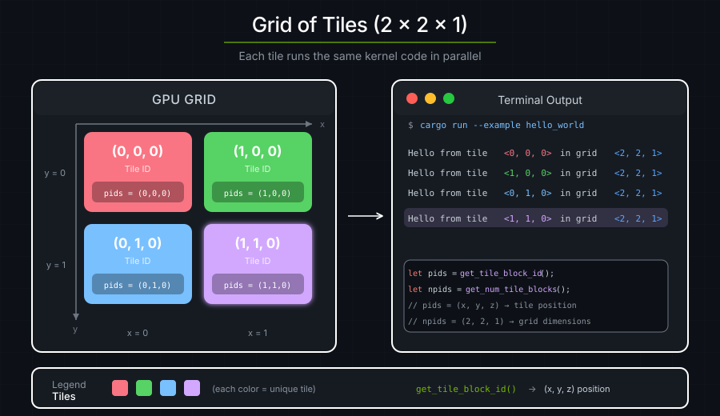

1. Hello World#
Launching a tile kernel starts N concurrent copies of the same function.
Each copy is a tile program (also called a tile block): a single logical
thread operating on a multi-dimensional tile of data.
Note: Tile programs run concurrently, but the CUDA runtime may not run all of them at the same time. Communication between tile programs requires detailed knowledge of the CUDA runtime.

Here is a kernel that prints "hello" from the GPU:
use cutile::error::Error;
use cutile::prelude::*;
#[cutile::module]
mod hello_world_module {
use cutile::core::*;
#[cutile::entry()]
fn hello_world_kernel() {
let pid0 = program_id(0);
let pid1 = program_id(1);
let pid2 = program_id(2);
let n0 = num_programs(0);
let n1 = num_programs(1);
let n2 = num_programs(2);
cuda_tile_print!(
"Hello from program <{}, {}, {}> in a grid of <{}, {}, {}> programs!\n",
pid0, pid1, pid2,
n0, n1, n2
);
}
}
use hello_world_module::hello_world_kernel;
fn main() -> Result<(), Error> {
let device = Device::new(0)?;
let stream = device.new_stream()?;
let launcher = hello_world_kernel();
launcher.grid((2, 2, 1)).sync_on(&stream)?;
Ok(())
}
Output:
Hello from program <0, 0, 0> in a grid of <2, 2, 1> programs!
Hello from program <1, 0, 0> in a grid of <2, 2, 1> programs!
Hello from program <0, 1, 0> in a grid of <2, 2, 1> programs!
Hello from program <1, 1, 0> in a grid of <2, 2, 1> programs!
Four tile programs were executed by the CUDA runtime, each printing its own coordinates.
GPU vs. CPU Code#
cutile-rs programs have two parts: code that runs on the GPU, or the device-side, and code that runs on the CPU, or the host-side.
The following snippet will JIT-compile to the GPU when executed from the host-side:
#[cutile::module]
mod hello_world_module {
use cutile::core::*;
#[cutile::entry()]
fn hello_world_kernel() {
// This code runs on the GPU!
}
}
#[cutile::module]marks a module as containing GPU code.#[cutile::entry()]marks a function as a kernel entry point.
Each coordinate in the launch grid gets one instance of the kernel function.
The following host-side code will launch the device-side code:
fn main() -> Result<(), Error> {
let device = Device::new(0)?; // Connect to GPU
let stream = device.new_stream()?; // Create a work queue
let launcher = hello_world_kernel(); // Get the kernel launcher
launcher.grid((2, 2, 1)).sync_on(&stream)?; // Launch 2×2×1 = 4 programs
Ok(())
}
Host-side code sets up the GPU, specifies the kernel launch grid, and launches the kernel.
Program IDs#
Each tile program is assigned an ID along each axis of the 3-dimensional launch grid, following Triton's tl.program_id(axis) / tl.num_programs(axis):
let pid0 = program_id(0); // This program's index along grid axis 0
let n0 = num_programs(0); // The grid extent along axis 0
For each axis k, 0 <= program_id(k) < num_programs(k). The tuple forms get_tile_block_id() and get_num_tile_blocks() return all three coordinates at once.

Programs use their coordinates to select which data to process.
Under the hood#
At compile time:
#[cutile::module]captures your Rust code as an AST.At first kernel launch: The AST is compiled to Tile IR bytecode → cubin (GPU binary).
Cached: The compiled kernel is cached in memory for the rest of the process, so later launches of the same variant skip compilation. Caching across processes (an on-disk cubin cache) is opt-in; see Compilation.
Launch: 4 tile programs are dispatched to the GPU.
Execution: All 4 tile programs run concurrently, each printing its coordinates.

Key Takeaways#
Concept |
What It Means |
|---|---|
Tile programs run concurrently |
You launch N tile programs, they all execute concurrently |
Tile programs are assigned IDs |
Each program uses its per-axis IDs to work on different data |
Host orchestrates |
CPU code decides grid shape and launches work |
Same code, different data |
The kernel is written once and executed by many tile programs |
Exercise 1: Change the Grid Size#
Modify the grid to (3, 3, 1). How many messages do you see?
launcher.grid((3, 3, 1)).sync_on(&stream)?;
Answer
You should see 9 messages (3 × 3 × 1 = 9 tile programs).
Exercise 2: Use the Z Dimension#
Try (2, 2, 2) for a 3D grid. What changes?
Answer
You'll see 8 messages. The z coordinate will now vary from 0 to 1.
Exercise 3: Calculate Total Programs#
Modify the kernel to also print the total number of tile programs.
Answer
let total = n0 * n1 * n2;
cuda_tile_print!(
"Program <{}, {}, {}> of {} total programs\n",
pid0, pid1, pid2, total
);